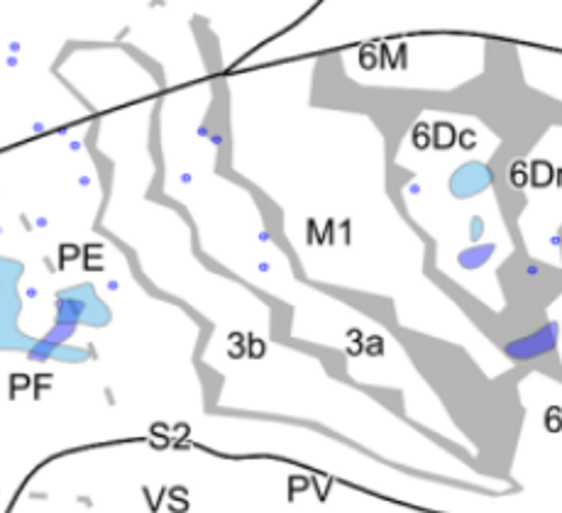
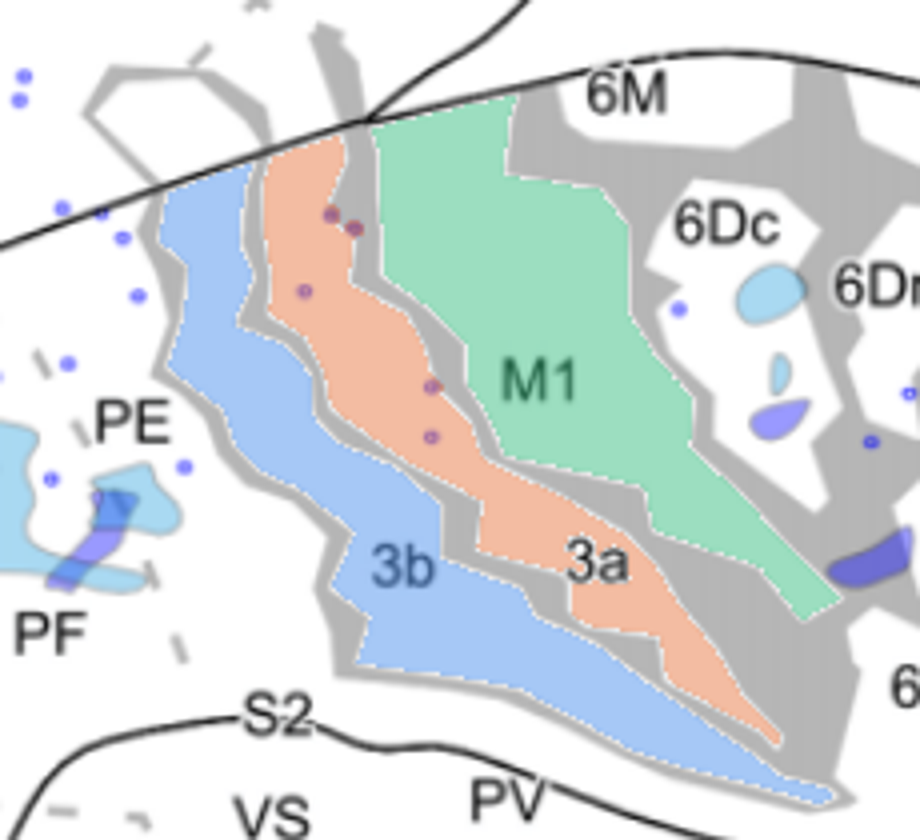
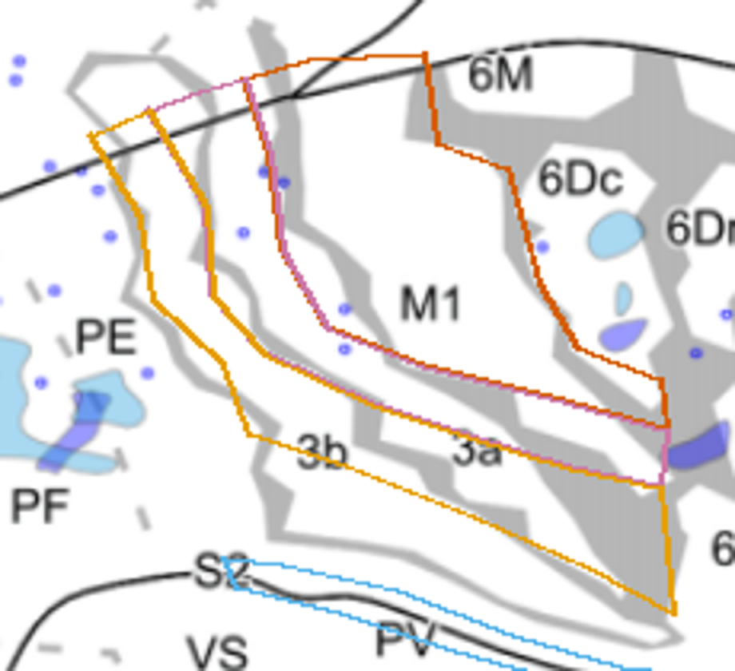

31 October 2026 · CJ58R and CJ61 · Quality correction following source inspection and user feedback.
rejected_pending_retrace and analysis_eligible=False. Native ImageJ read-back verifies file integrity only.Previous outlines with rejection flags · Archived pre-correction outputs · Source PDF · Flagged measurements
| Figure | Source interpretation | Measurement consequence |
|---|---|---|
| 6C, CJ61 Caption: PDF page 9, printed page 868 | Gray bands represent uncertainty in architectural borders. The dashed line is the authors' best estimate of the outer M1 boundary. LS identifies the lateral sulcus. Colored polygons join stimulation sites with related movement responses. | Follow the dashed M1 boundary where visible. Preserve the broad gray bands around 3a and 3b, including their narrow, bending extensions. A response polygon is not a whole architectural field. The saved original file had no 3a or 3b ROI. |
| 9A, CJ58R Image: PDF page 11; caption: PDF page 13, printed page 872 | Gray bands are architectural boundary regions. Dashed gray lines mark borders estimated from other animals. Solid lines mark map boundaries and major cortical folds. The insets identify gross anatomy and cuts introduced during unfolding. | Do not treat all gray bands as sulci, all dashed lines as equally observed, or every solid line as an areal border. A–D repeat the same animal and geometry with different tracer overlays; they can help reveal obscured strokes but are not independent cases. |
The methods explain that transition-zone widths reflect section spacing, repeated plotting variability, differences between architectural methods and histological artifacts. A band midpoint is an operational convention, not a recovered exact border. Band-edge sensitivity ranges would not be statistical confidence intervals.
The pilot extracts the printed interiors of dorsal M1, 3a and 3b using connected regions bounded by neutral gray/black strokes. Enclosed letter and dot holes are filled. It uses the original crop at 3 pixels per PDF point; the images below are enlarged for viewing. The PDF embeds raster figures, so enlargement adds no new anatomical information.



The visible interiors can be captured more faithfully without substituting an atlas shape. These masks exclude the gray transition zones, are limited by the map line across the top, and do not estimate complete M1, 3a or 3b. No physical calibration or atlas deformation was applied. They are not included in the main measurement table or batch totals.
ImageJ TIFF with overlay · Editable ImageJ ROIs · Seeds, thresholds and definitions · Native ImageJ read-back
Use either the embedded TIFF overlay or the ROI archive, not both. Canonical masks, source checksum and a reproducible generation script are retained.
A trial of the same gray-stroke segmentation leaked outside CJ61's fields through open borders and colored overlays. It was rejected and not exported as a measurement. Completing this panel requires manually reviewed shared boundary paths and explicit partial-window limits, plus separate treatment of hidden segments. An atlas cannot turn those limits into observed whole-field borders.
For gray transition bands, retain a printed-interior mask, the boundary band, and—only if needed—a documented shared midpoint estimate. Where the band edges can be identified, report area sensitivity to permissible boundary placement. Do not fill genuinely unobserved ends to obtain a whole-field number.
The full Burman parcellation has not been corrected by this pilot. CJ61 still needs manual reconstruction of visible/shared borders and explicit partial extents; CJ58R needs complete line classification, review of remaining parcels and uncertainty-band treatment. Other papers remain provisional and have not gained anatomical validation from this spot check. Scale ambiguity in Burman remains separate from contour quality.